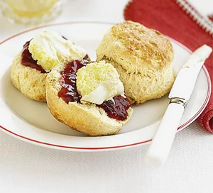

Great Scone Recipe

How to make a beautiful scone.
Today's recipe ensures a great tasting perfect scone everytime.
Ingredients:
- 350g self-raising flour, plus more for dusting
- 1 tsp baking powder
- 85g butter, cut into cubes
- 3 tbsp caster sugar
- 175ml milk
- 1 tsp vanilla extract
- squeezed lemon juice (see tips below)
- beaten egg, to glaze
- jam and clotted cream, to serve
Instructions
- Heat the oven to 220C/200C fan/gas 7. Tip the self-raising flour into a large bowl with ¼ tsp salt and the baking powder, then mix.
- Add the butter, then rub in with your fingers until the mix looks like fine crumbs. Stir in the caster sugar.
- the milk into a jug and heat in the microwave for about 30 secs until warm, but not hot. Add the vanilla extract and a squeeze
of lemon juice, then set aside for a moment.
- Put a baking tray in the oven. Make a well in the dry mix, then add the liquid and combine it quickly with a cutlery knife –
it will seem pretty wet at first.
- Put some flour onto the work surface and tip the dough out. Dredge the dough and your hands with a little more flour,
then fold the dough over 2-3 times until it’s a little smoother. Pat into a round about 4cm deep. Take a 5cm cutter
(smooth-edged cutters tend to cut more cleanly, giving a better rise) and dip it into some flour. Plunge into the dough,
then repeat until you have four scones. You may need to press what’s left of the dough back into a round to cut out another four.
- Brush the tops with a beaten egg, then carefully arrange on the hot baking tray. Bake for 10 mins until risen and golden on
the top. Eat just warm or cold on the day of baking, generously topped with jam and clotted cream. If freezing, freeze once cool.
Defrost, then put in a low oven (about 160C/140C fan/gas 3) for a few minutes to refresh.